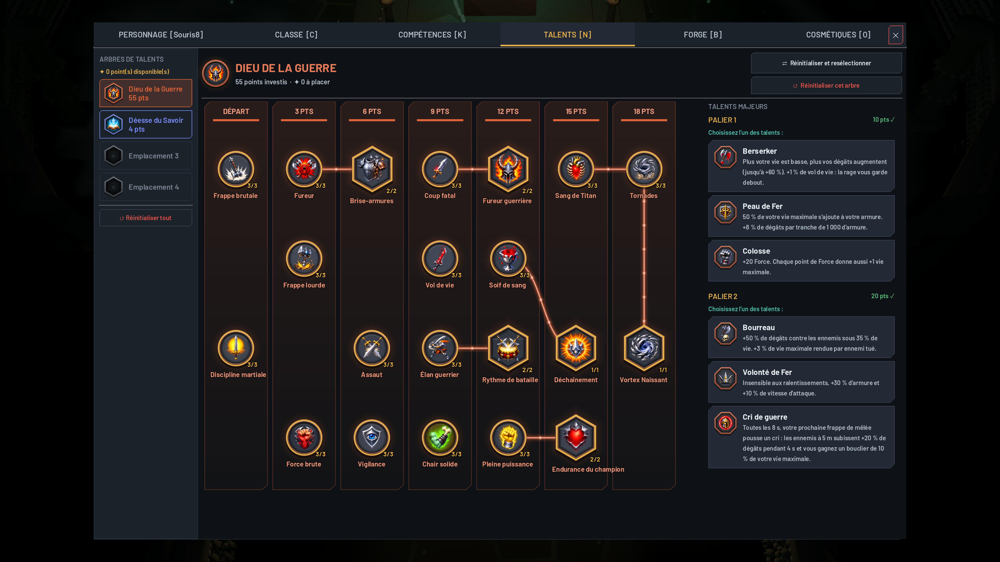
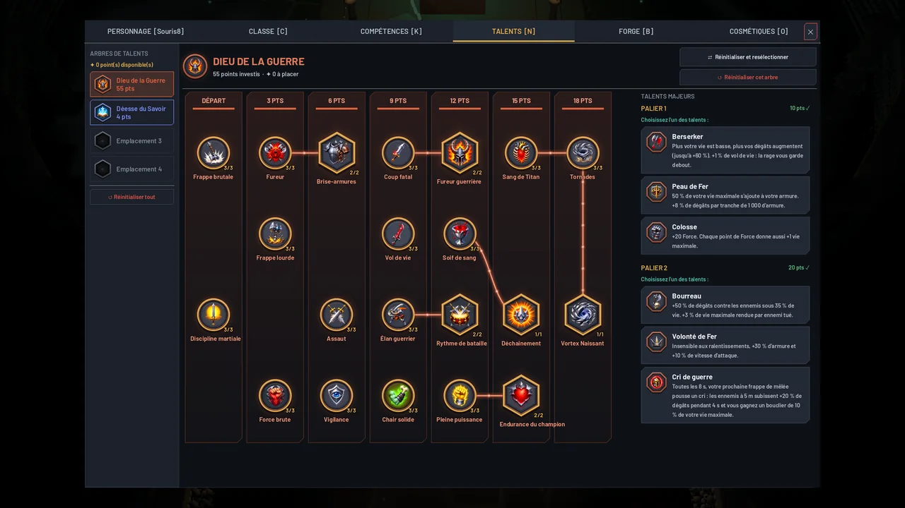

Bones, storms and a big clean-up
The Summoner gets a real army, the world gains rain, storms and night, and the talents are rebuilt.
The Summoner finally gets a real army, the world gains rain, storms and night, the talents are rebuilt and dozens of playtest reports are fixed. Thanks to all the testers!
A real army
No more maximum number of skeletons: every Bone minion reserves essence. New skeletons, bone archers and golem; monsters attack them, and they follow you from zone to zone. The Convocation spell calls them back to the cursor, and eight minion supports arrive along with three Bone legendaries.
Rain, storms and night
Drizzle, downpour or a thunderstorm on most maps, and sometimes night: a bluish moon and a lantern to light your way. The desert is redesigned with five layouts, and the refuge chest is shared between your characters.
Talents rebuilt
Every rank adds the same value, strong effects have a single rank, and major talents are shown to the right of the tree. Support compatibility is redone: no more damage support on a skill that deals none.

Patch notes
Summoner and minions
- Skeletal essence: no more maximum number of skeletons; every Bone minion reserves essence (skeleton 30, archer 40, golem 70 out of a base 120). An essence gauge in the HUD.
- New models for the skeletons, the bone archers and the golem; the enemy Bone Colossus wears armour.
- Monsters attack your minions, who can die. Minions follow you from one zone to another, go around obstacles and no longer get stuck.
- Bone archers: their arrows are real projectiles (pierce, bounce, return, all around, multiple projectiles…), fly further, glow, aim where the target is going, and the archer moves closer if its arrows cannot reach.
- Skeletons and golem accept melee supports: Multistrike, Shockwave, Quick Assault.
- New Convocation spell (instant): recalls all your minions to the cursor, +20% damage for 4 s.
- New supports: Legion, Brotherhood, Horde Frenzy, Multiple Summons, Elite, Prolongation, Fleetingness, Fast Projectiles.
- Three Bone legendaries: Marrow of the Ossuary, Crown of the Lich King, Gravedigger's Seal. Minion weapons (sceptres, totem staves) with their own affixes.
- A single buff per minion skill, showing the number of living minions.
Talents
- God trees reworked: every rank adds the same value, strong effects have a single rank, two stats on a node have the same value, no more unrelated bonuses. Extra ranks are refunded automatically.
- Major talents shown to the right of the tree: the three choices of each tier are readable at a glance, one click is enough.
- Fixed: Tactical Mastery and Grand Alchemist lengthened cooldowns; the God of War's 7th column was open from 0 points.
- Talent tooltips: small / medium / major talent, the current rank's effect line by line.
Supports and skills
- Support compatibility redone: a damage support no longer goes on a skill without damage, a cast speed support no longer on an instant spell.
- Instant tag (elixirs, Convocation) compatible with Preparation; Duration tag: Prolongation and Fleetingness work on elixirs.
- Echo (spells) and Multistrike (melee): beyond 100%, several repeats.
- Renamed: Quick Assault, Quick Casting, Bounce.
World
- Weather: rain (from drizzle to downpour) and thunderstorms with lightning, at random on most maps and at the refuge — never in the lava rift.
- Night can fall: a bluish moon, and a lantern lights your way.
- Desert redesigned: less yellow light, less blinding spells, sandstone walls, and five different layouts.
- Refuge chest: storage shared between all your characters, in front of the tent.
- Minimap: a real map of walkable areas (galleon decks included), smooth outlines, a bluish discovery fringe, the boss pinned at the edge; the small map no longer shows items.
- Boss music when the boss wakes.
Balance
- Experience curve and monsters reviewed (life, damage, act multipliers), a punchier early game.
- Loot quantity depends on the nightmare tier; materials drop in variable amounts (no longer always 9 embers).
- Forge unlocked at level 10. An equipped item placed on the anvil returns to its slot on confirmation.
Interface and comfort
- Key bindings: you can remove a skill from its key and bind it elsewhere, and two skills swap places correctly.
- Auto-equip finally handles both rings.
- Shields held correctly, axes the right way round.
- Title screen background without facets; shadow and ambient occlusion options, MSAA 2x by default (better performance).
- Target ailments that disappear with it, aura reservation aligned, lighter tooltips (active supports, archers).
- Game icon on the EXE.